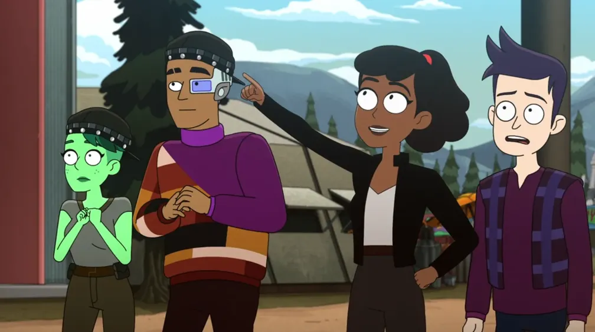
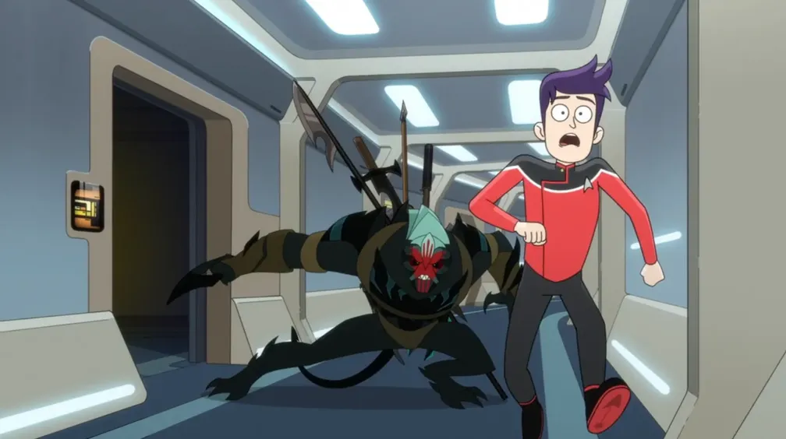
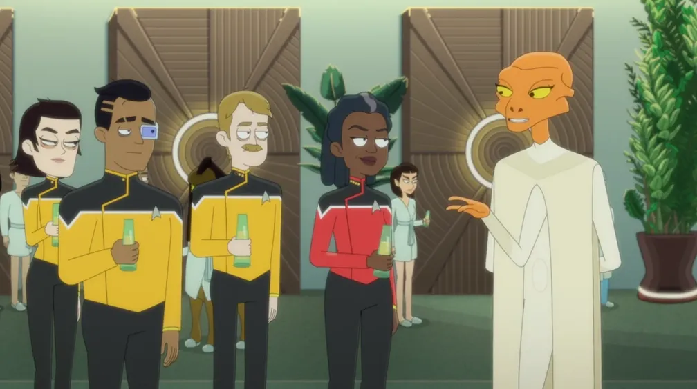
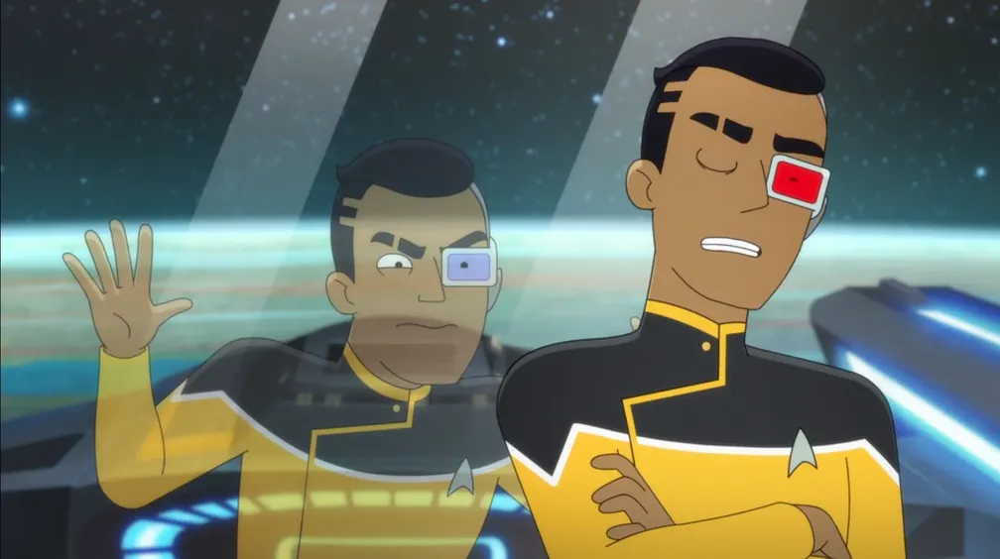
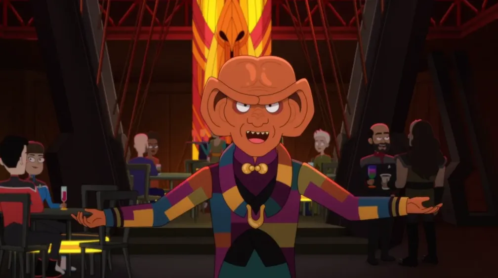
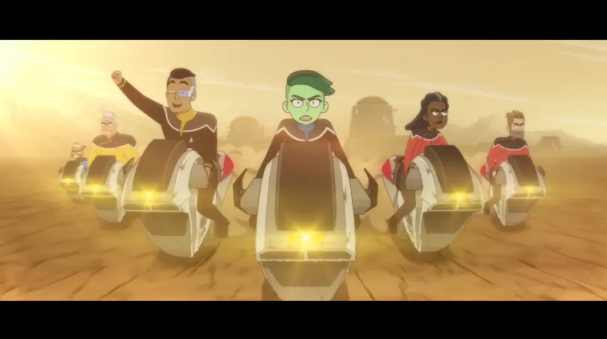
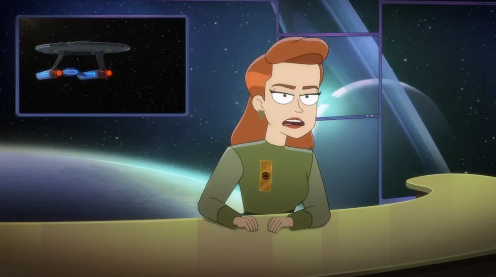
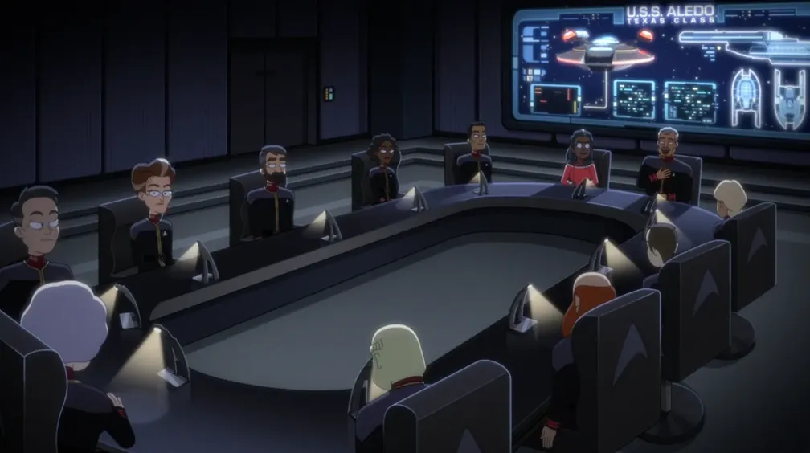

Season 3 gives us another slight uptick in average episode ratings, with adventures that take us to Bozeman, Montana and Deep Space Nine for plenty of fan service. This season also gives us an important backstory for Rutherford that culminates in a big reveal in the season finale. And we'll finally find out what happened to Peanut Hamper after Season 1, in the love-it-or-hate-it episode, “A Mathematically Perfect Redemption”.
Furious about her mother's arrest, Mariner conscripts her lower decks friends for a mission to find evidence to exonerate their captain – a mission which includes a trip to Bozeman, Montana.

❗
Important Episode Conclusion to the previous season finale.
The gang take a trip to Bozeman, Montana, site of Zefram Cochrane's first warp ship launch and where aliens first officially made contact with Earth. That story is told in Star Trek: First Contact, and there are lots of references to that film in this episode – I will not point all of them out.
🔗︎
Minor references:
Among the items on the news crawl at the bottom of the screen in the opening broadcast is “Country Stampede: dozen teens injured rushing stage at Sonny Clemonds concert”. Clemonds is a country musician from Earth who was cryonically frozen in 1994 and revived in 2364, in TNG 1x26: The Neutral Zone.
Rutherford and Tendi dine at Sisko's Creole Kitchen, the restaurant owned and operated by Ben Sisko's father, first seen in the episode DS9 4x11: Homefront. Rutherford is wearing a shirt that resembles one worn by Jake Sisko in that episode.
The hot sauce on the table at Sisko's is “Ketracel White-Hot”. In DS9, Ketracel White is the drug that the Jem'Hadar are dependent on, created by the Founders to keep them compliant.
The secret investigation into the Pakled bombing was led by Captain Morgan Bateson. Bateson was the captain of the USS Bozeman in 2278 when his ship was transported forward in time to 2368, where he was rescued from the temporal distortion by the Enterprise‑D in TNG 5x18: Cause and Effect. Commander Tuvok from Star Trek: Voyager was said to have conducted Vulcan mind-meld interrogations as part of the investigation.
Thoughts: This is the first season opener that actually feels like a season opener. It logically follows-up on the events of the previous season's finale and pays lots of respect to Trek canon.
Cmdr. Ransom punishes Mariner while repairing a space elevator; Boimler tries to say "yes" to more things and ends up being hunted by an alien called K'Ranch.

💁♂️️
J.G. Hertzler reprises his role as General Martok (only as recorded footage, and admittedly a Ferengi knock-off). Martok was a recurring character in Star Trek: Deep Space Nine.
🔗︎
Minor references:
Other than the interactive Martok board game, there are barely any references or easter eggs in this episode!
A crewman asks Boimler to join their springball tournament. Springball is a Bajoran sport that was depicted in DS9 4x22: For the Cause, where players hit a ball using a gloved hand in a court with a single target on one wall. What they actually play here is racquetball, using racquets in a court with multiple targets on several walls, as depicted in DS9 2x11: Rivals. Boimler and the others wear the same athletic uniform that Dr. Bashir wore while playing racquetball in that episode.
Thoughts: This is a fine example of an episode that barely has any ties to previous Trek, without a bunch of little easter eggs for fans to find, and it still manages to be entertaining and valuable. Others rated this episode as squarely average, but I'm giving it an extra half star.
The Cerritos crew competes with another Cali-class crew to clean up psychic space rocks that make your dreams come true (before turning you to stone), and find they are more than meets the eye; Tendi works with her new science officer mentor, Dr. Migleemo.
Captain Freeman tries to take the engineering crew on a retreat so they can relax. Meanwhile, Tendi uncovers a plot by Delta Shift to rig a lottery to get better quarters on Deck 1, sending the gang on an adventure through the ship to stop them.

🔗️
The opening scenario with the “D'Arsay archive situation” where Freeman is inhabited by a demigod, transforming the ship into a stone temple after donning a mask... is all a direct reference to TNG 7x17: Masks.
🔗︎
Minor references:
When the gang enter the swamp under the hydroponics bay, the skeleton of a Doopler can be briefly seen among the roots. Apparently he got stuck down there during the events of LOW 2x05: An Embarrassment of Dooplers.
Rutherford is challenged by his past self to a VOY “Drive”-style race while Boimler and Mariner get stuck on recruitment booth duty.

‼️
Very Important Episode This episode contains some important backstory for Rutherford.
🔗️
Rutherford builds the Delta Flyer, the auxiliary craft designed by Tom Paris in VOY 5x03: Extreme Risk. He takes it on a race similar to the one in VOY 7x03: Drive and wears the same pilot's uniform featured in that episode.
80
Starbase 80 mentioned
🔗︎
Minor references:
Tendi asks if Rutherford's nightmare is “the one where you're in a new timeline with Kirk and Spock where they have cinematic chemistry”. This is a bit of a meta-reference to the Kelvin timeline films, Star Trek [2009], Star Trek Into Darkness, and Star Trek Beyond.
Rutherford suspects an anaphasic lifeform took over his body. Ronin the candle-ghost from that terrible TNG episode TNG 7x14: Sub Rosa was an anaphasic lifeform.
There are lots of little easter eggs at the fair where Boimler and Mariner are tending the recruitment booth. Here are just a few:
The “conspiracy truthers” ask about whatever happened to Sisko after the events of DS9, and they also talk about “butt bugs” that took over the minds of Starfleet admirals. They are referring to the creatures from TNG 1x25: Conspiracy, and they even have a model or specimen on display at their booth – however, it's questionable whether they actually entered human hosts through the butt.
Tendi has a pod plant from Omicron Ceti III. Its mind-controlling spores were the subject of the story in TOS 1x24: This Side of Paradise.
When Boimler lashes out at the fair, he accosts a couple with forehead markings and accuses them of “always getting people trapped inside of games”. These are members of the race known as the Wadi, who love games and did, indeed, get four of the DS9 crew trapped inside one of their games in the episode DS9 1x10: Move Along Home.
Petra Aberdeen steals the staff of the Grand Nagus, often seen carried by the head of the Ferengi Alliance in Star Trek: Deep Space Nine.
The Cerritos goes to Deep Space Nine to do Gamma Quadrant stuff. Mariner does her best to be friendly with her girlfriend's friend group. Tendi gets annoyed when another Orion in Starfleet reminds her of her people's reputations as pirates.

🔗
The Cerritos visits Deep Space Nine, the eponymous space station from the series Star Trek: Deep Space Nine. Obviously, there are numerous references, including the DS9 theme song playing when they first arrive, and Quark's mention of the Dominion War, which was a major story line in the series.
🔗
The title, “Hear All, Trust Nothing”, is the 190th Ferengi Rule of Acquisition.
Mariner jokes about ending up in a mirror universe with Smiley. Smiley was the nickname given to the mirror universe's Miles O'Brien in DS9.
Kira still has Ben Sisko's baseball on the desk in the station commander's office. A sign, perhaps, that she hopes he will return one day.
Non-reference: Though it sounds like Kira and Shaxs have a long history, he was never mentioned in DS9.
Morn can be seen sitting at the bar in Quark's. This supposedly very-chatty alien was a fixture at the bar all throughout DS9, but as a running gag, he was never actually heard speaking.
The colorfully-layered drinks seen throughout the episode are Modela aperitifs, first seen in DS9 1x18: Dramatis Personae.
Dangling his legs off the second level of the promenade, Rutherford says he wanted to have a heart-to-heart with a junior reporter there. In DS9, best friends Nog and Jake often sat dangling their legs off the second level, and Jake was a junior reporter for the Federation News Service.
Mariner claims to have a copy of the hologram of Quark's head on Kira's body. This is a reference to the episode DS9 3x08: Meridian.
Peanut Hamper mentions wanting to become a dabo girl on Freecloud. Dabo is a casino game first introduced in Star Trek: Deep Space Nine, and Freecloud was a planet bustling with business where Picard and crew tracked down Bruce Maddox at Bjayzl's base of operations in PIC 1x05: Stardust City Rag.
Peanut Hamper calls the Areore “the poor man's Aurelians”. The Aurelians were another bird-like species first seen in TAS 1x02: Yesteryear.
Thoughts: This episode is ridiculous and I absolutely love it. Others might find its absurdity to be off-putting, but I'm giving it 4 stars.
The gang play out a fantasy action-adventure in the holodeck in which they are the heroes, but Boimler is notably preoccupied by a recent visit with the First Officer.

🔗
This episode is a follow-up to LOW 1x09: Crisis Point, although the two stories have essentially nothing to do with each other.
There are several meta-references to general filmmaking in this episode.
First, Star Trek: Lower Decks usually has an aspect ratio of 16:9, which is a typical widescreen format for streaming television. All of the scenes in this holographic “movie”, however, are in a cinematic 21:9 “ultrawide” format, creating a “black bar” at the top and bottom of the screen. Humorously, both Boimler and Mariner are seen stepping over the bottom bar when exiting the holodeck back into their normal aspect ratio.
Also, when the gang exit the time portal thingy (at about 10:35), a cue mark can be seen in the upper-right corner. Also sometimes informally called a “cigarette burn”, the cue mark tells the projectionist at a movie theater when it's time to perform a changeover between two film reels on different projectors so that the film continues playing seamlessly.
At various points throughout the “movie”, blips representing dust and dirt on the film reel can be seen.
🔗
There are numerous references to Star Trek II: The Wrath of Khan at the space station where the gang meet Dr. Helena Gibson. Gibson (and her uniform) resemble Dr. Carol Marcus. The interior of the station is very similar to the one in the film, and the briefing video about the Chronogami uses similar graphics to the briefing video for the Genesis device. Rutherford even makes a remark about the graphics, making a bit of an in-joke about how the sequence for the “Genesis effect” in the 1982 film was the first entirely computer-generated sequence ever in a feature film.
🔗
Toward the end of Boimler's adventure, he visits the third moon of Shatanari, which is clearly a play on famed Kirk actor William Shatner's name. There, Boimler and Mariner confront a god-like creature in a lightning-filled craggy landscape, which references Star Trek V: The Final Frontier. Then, the reveal of the true meaning behind “Ki-Ty-Ha” is a reference to V'ger from Star Trek: The Motion Picture.
🔗
Finally, Boimler finds himself at Kirk's ranch, and asks if he's in the Nexus, referencing Star Trek Generations.
🔗︎
Minor references:
Mariner and Tendi make fun of the Kelvin timeline trilogy of films (Star Trek [2009], Into Darkness, and Beyond) when Mariner says “What, does it make an alternate cinematic timeline that runs concurrent to our own, but with, like, different people playing younger versions of us?” and Tendi adds, “Scientifically, that would be a bit of a reach.”
One of the timeframes that Tendi & crew visit is the founding of the Federation in 2161. That ceremony was originally seen in ENT 4x22: These are the Voyages.... In the same scene, Rutherford tinkers with what appears to be a thalaron generator device from Star Trek Nemesis.
A reporter comes on board to report on “Project Swingby” where the crew goes back to check on planets the Federation hasn't visited in a while.

🔗
The Cerritos is assigned to visit Ornara where, as stated, Picard made first contact 17 years prior. That story, including how he left them on their own to deal with their withdrawal, was told in TNG 1x22: Symbiosis.
80
Starbase 80 We finally get a glimpse about what life is like on Starbase 80.
🔗︎
Minor references:
After finding out that the Ornarans don't need Starfleet, Admiral Buenamigo suggests checking up on their government to be sure it isn't being run by kids or someone pretending to be the devil. These are references to TOS 1x08: Miri and TNG 4x13: Devil's Due, respectively.
Before being put off the ship, Mariner questions what is happening. She asks if this is a “Frame of Mind thing”, directly referencing the episode TNG 6x21: Frame of Mind, where Riker thought he was losing his mind when he was unable to tell the difference between reality and hallucinations which were the result of a “neural drain” being used on him.
Starfleet decides to shutter the California Class in favor of the new, automated Texas Class, so the Captain pits her crew against the new ships on a “mission race”. Mariner loses interest in her job as an archeologist.

‼️
Very Important Episode You'll want to watch this one to keep apprised of important plot developments.
🦹♂️
Spoiler » Badmiral: Buenamigo
⏯️
Post-Credits Scene!
🔗︎
Minor references:
Billups demands “Commander Data-level work” from his people, saying “those isolinear chips better be a blur”. This is perhaps a nod to when Data quickly replaced isolinear chips into the engineering computer faster than any human could, in TNG 1x03: The Naked Now.
Ransom shows the crew how to swing their leg over the back of a chair when sitting. This is a reference to the somewhat unorthodox way that actor Jonathan Frakes, as Commander William Riker, would often sit in low-backed chairs. This maneuver was unofficially dubbed by fans as the “Riker maneuver”.
The conference room at Starfleet Headquarters with the long oval table and desk lamps, is made to resemble the HQ conference room in Star Trek VI: The Undiscovered Country.
The computer that controls the Texas-class ships – which is just a display with random horizontal and vertical lines on it – is a reference to the “M-5 multitronic unit” from TOS 2x24: The Ultimate Computer, which was designed to automate ship's functions and was tested (unsuccessfully) on the Enterprise. Later, Rutherford warns the AI that it will be “dunsel”, also referencing this TOS episode, in which Kirk is called “Captain Dunsel” – slang for a useless item – during the demonstration of the AI-controlled ship.
Thoughts: This is my favorite season finale so far. It delightfully pulls together several running threads from previous episodes instead of just being a standalone story, and it gives subtle nods to an original TOS episode that had a similar theme.
This is an independent fan site and is not affiliated with or endorsed by Paramount Global. Star Trek and all related marks, logos, and characters are the property of Paramount Global. Reset Cookie Preferences
"Franchise Episode" tells you the order in which episodes from ANY/ALL Star Trek television shows aired or streamed for the first time. This number excludes movies, TOS's "The Cage", and the "Very Short Treks" web shorts. click or scroll to close
1st, 2nd, and 3rd place awards reflect the best, but also the most representative episodes of the series. So, even excellent one-off or “special” episodes often aren't considered. click or scroll to close
Ex Astris Scientia is an independent website devoted to the Star Trek universe, and includes reviews of episodes on a scale of 0 to 10. Visit the site at ex‑astris‑scientia.org. click or scroll to close
IMDb ratings re-distributed on a 2-9 scale. Scores of 0, 1, and 10 are reserved for outliers (determined by a z-score less than -2.5 or greater than 2.5). User ratings on IMDb for the episodes in Star Trek: Lower Decks range from 6.9 to 8.9. IMDb ratings were retrieved on January 26, 2026. click or scroll to close


 @c6reviews.
@c6reviews.